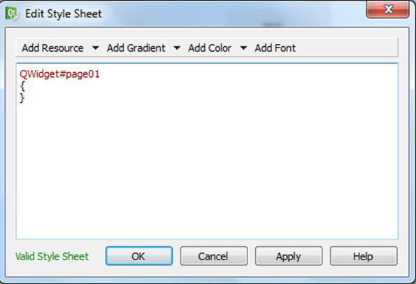

It is possible to customize the page background, changing its colour, adding an image and inserting an edge.
To do this do:
Click the right mouse key on a free area of the page
Choose “Change styleSheet”
You see the following figure:

Put the cursor inside curly brackets and select:
image: “Add Resource (arrow) → image”
color: “Add Color (arrow) → background-color”
Warning: using the gradient to set the background of a page will slow down the device. It is better to use a defined color or an image.
To customize the splash screen overwrite the “splash.png” file in the “config” folder of the project. Splash image must be in the png format, of the same screen resolution of the used product:
TPAC1007/TP1043 => 480x272;
TPAC1008/TP1070 => 800x480.